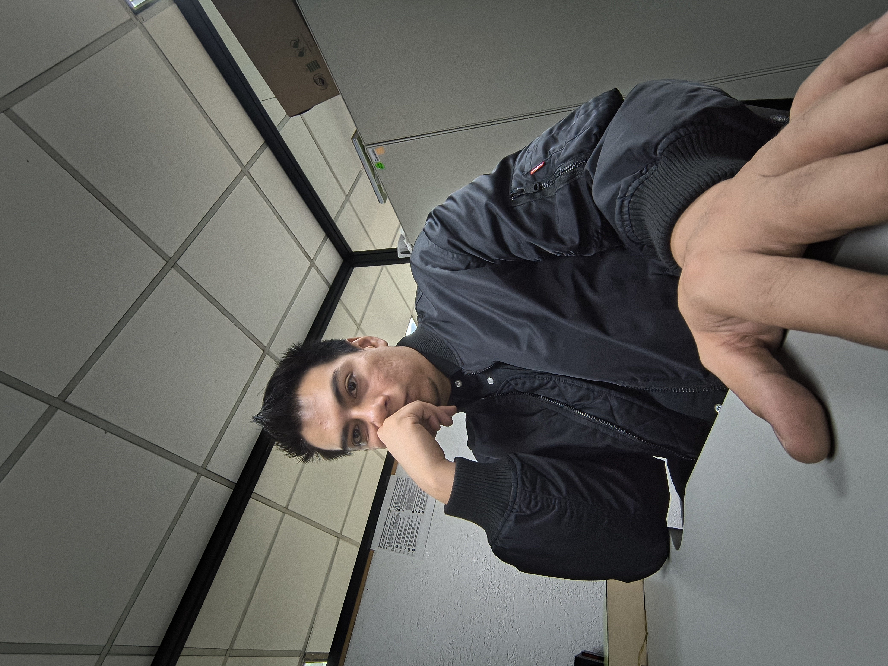

Sobre mí
Javier Arturo Paredes Tenorio

Contacto:
inktenorio@gmail.com
GitHub (tengorio)
Físico y especialista en estadística aplicada con experiencia en el sector público federal y privado. Mi trabajo se centra en diseñar modelos predictivos y estadísticos rigurosos, y construir las herramientas tecnológicas que los ponen a operar en producción.
Trayectoria Profesional
Analista Especializado / Científico de Datos
Secretaría de Ciencia, Humanidades, Tecnología e Innovación (Secihti, antes Conahcyt)
Enero 2025 – Presente | Dirección de Investigación Científica Básica y de Frontera
- Diseñé e implementé el algoritmo APEES (Scaled Prioritization with Social Equity), asignando **\(336,497,131 MXN** en fondos públicos a través de 3,631 propuestas evaluadas. Sustituí la media aritmética por mediana recortada (\)r_{ref} = 9.19\() y franja de indiferencia (\)= 0.05$), reordenando 154 proyectos bajo criterios de equidad social.
- Formulé e implementé un modelo Bayesiano Jerárquico Beta-Binomial con contracción parcial (shrinkage) y aditividad tipo Ley de Hess para simular cuellos de botella y tiempos de tramitación administrativa en \(N = 484\) proyectos a través de 4 rutas operativas y teoría de colas (\(M/M/k\)).
- Redacté el manuscrito científico “Designing Auditable Priority Mechanisms for Public Research Funding: Merit, Equity, and the APEES Algorithm” (en preparación para Science and Public Policy, Oxford University Press), formalizando el tratamiento de la franja crítica (\(\mathcal{F}\)) ante las Condiciones de Imposibilidad de Arrow.
- Diseñé la arquitectura de tableros de control desacoplados (Vanilla JS/CSS, Python updater, consultas SQL multiasociativas en MySQL/PostgreSQL) para monitoreo en vivo de convocatorias masivas.
Analista Especializado
Conahcyt
Agosto 2024 – Diciembre 2024 | Dirección de Ciencia de Frontera
- Diseñé un pipeline ETL e integración de OCR (EasyOCR y Azure API) para la auditoría documental de ~760 proyectos (fondo CB-2017-2018) y 363 PDFs de oficios. Formulé un discriminante de distancia absoluta (\(disc\_v1\)) con límites IQR para reconciliación de entregables y dictámenes.
- Desarrollé un algoritmo en Python para la extracción automatizada de DOI y validación de metadatos mediante la API de Crossref, automatizando la auditoría de artículos científicos comprometidos.
- Construí una aplicación desktop GUI en Python/Tkinter (
fusionador, ejecutable.exede ~25 MB) para indización con patrones Regex y corrección de paridad de páginas para impresión dúplex de expedientes PDF.
Data Science Analyst
Jüsto (Supermercado Digital)
Marzo 2024 – Agosto 2024 | Ciudad de México
- Reasignación estratégica de zonas de reparto e infraestructura logística de última milla utilizando la API de ArcGIS en Python.
- Clusterización de clientes según perfil de compra mediante K-Means y Análisis de Componentes Principales (PCA).
- Construcción de un índice cuantitativo para la identificación y prevención de productos propensos a agotarse (Never Stock Out).
Participaciones Destacadas
- Impact Lab de Claude (Anthropic): Participación en el laboratorio de desarrollo e investigación analítica con modelos de lenguaje y herramientas avanzadas de Inteligencia Artificial.
Docencia Universitaria
Profesor y Profesor Adjunto
Facultad de Ciencias, UNAM — Enero 2019 – Junio 2025
- Departamento de Matemáticas: Cálculo Diferencial e Integral I (Semestres 2024-1, 2023-1, 2021-2), Cálculo II (Semestres 2023-2, 2022-1, 2021-3), Cálculo III (Semestres 2022-2, 2020-2) y Cálculo IV (Semestre 2021-1).
- Departamento de Física: Termodinámica (Semestres 2025-2, 2025-1), Fenómenos Colectivos (Semestres 2024-2, 2024-1, 2023-3, 2023-2, 2023-1), Laboratorio de Mecánica (Semestre 2022-2) y Laboratorio de Electromagnetismo (Semestre 2019-1).
Programa Adopte Un Talento (PAUTA)
Julio 2023 – Agosto 2023
- Impartición de talleres de formación científica para estudiantes de alto desempeño.
Formación Académica
- Especialización en Estadística Aplicada
Instituto de Investigaciones en Matemáticas Aplicadas y en Sistemas (IIMAS), UNAM (Agosto 2023 – Mayo 2024).
Titulado por Examen General de Conocimientos. - Licenciatura en Física
Facultad de Ciencias, UNAM (Agosto 2015 – Agosto 2021).
Tesis: “Desarrollo de un espectrómetro didáctico de fotoemisión y Raman para caracterizar matlanina”. Presentada en el LXI Congreso Nacional de Física y en la XIII Reunión Anual de la AAPT-MX.
Competencias y Stack Tecnológico
- Estadística y Ciencia de Datos: Preprocesamiento y Análisis Exploratorio (EDA), Análisis Geoestadístico (SIG/QGIS/ArcGIS), Modelos de Regresión Generalizados (GLM), Análisis de Supervivencia, Inferencia Bayesiana, PCA, Clustering (K-Means, LDA, MDA).
- Herramientas e Informática: Python (
pandas,scikit-learn,Streamlit,NumPy,SciPy), R, SQL, LaTeX, Quarto, Git, Microsoft Office Avanzado. - Idiomas: Español (Nativo), Inglés (C1 Avanzado), Alemán (A2 Básico).